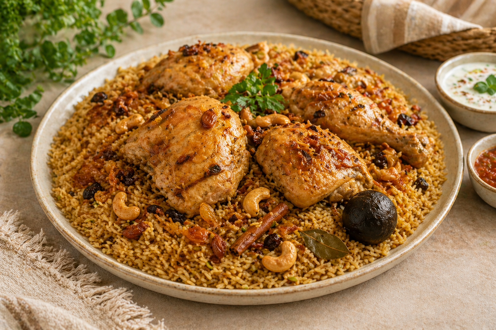
جاهز اليوم
42 ر.س
كبسة دجاج
طبخ منزلي بنكهة واضحة وتقديم مرتب مناسب للطلب الفردي أو العائلي.
اطلب هذا الطبقسُفرة قالب مصمم للأسر المنتجة والطبخ المنزلي، يركز على أهم شيء فعلاً: أن يرى الزائر الأطباق، يجوع، ثم يطلب مباشرة.
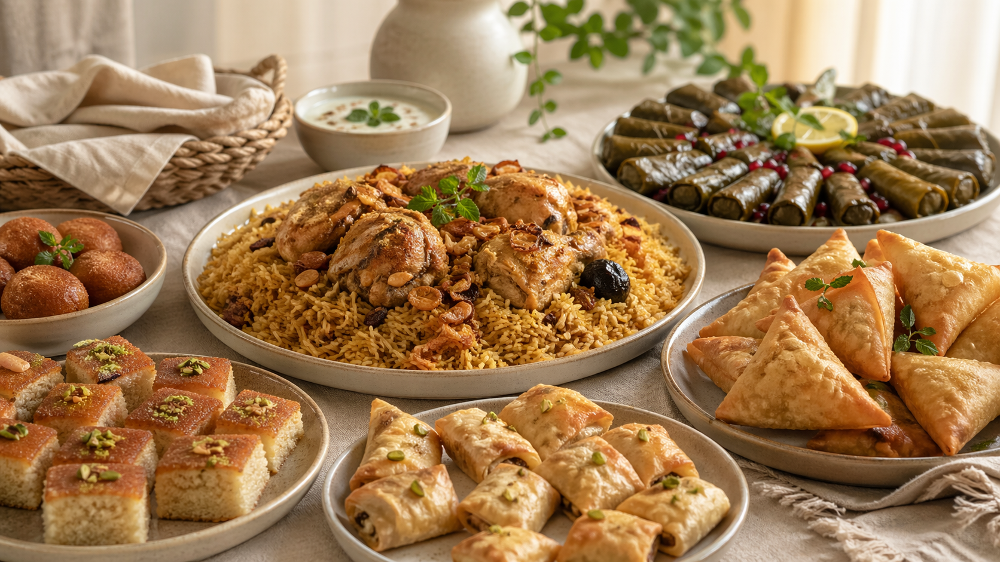
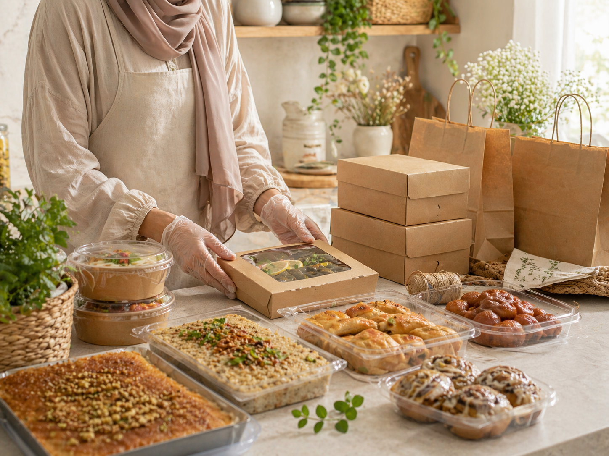
لأن نشاط الأسر المنتجة يعتمد على الثقة والنظافة والوضوح، جرى تجهيز هذا القالب بصريًا ليظهر التحضير والترتيب والتغليف بأسلوب مريح وشهي، وليس كواجهة مطعم جلسات.
هذا القسم مهم جدًا للأسر المنتجة، لأنه يدفع الزائر إلى القرار السريع بدل التشتت بين تفاصيل كثيرة.

طبخ منزلي بنكهة واضحة وتقديم مرتب مناسب للطلب الفردي أو العائلي.
اطلب هذا الطبق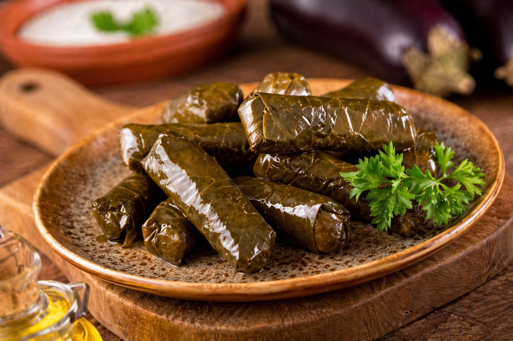
صنف جانبي مطلوب بكثرة ويجذب الزائر من شكله وسهولة إضافته.
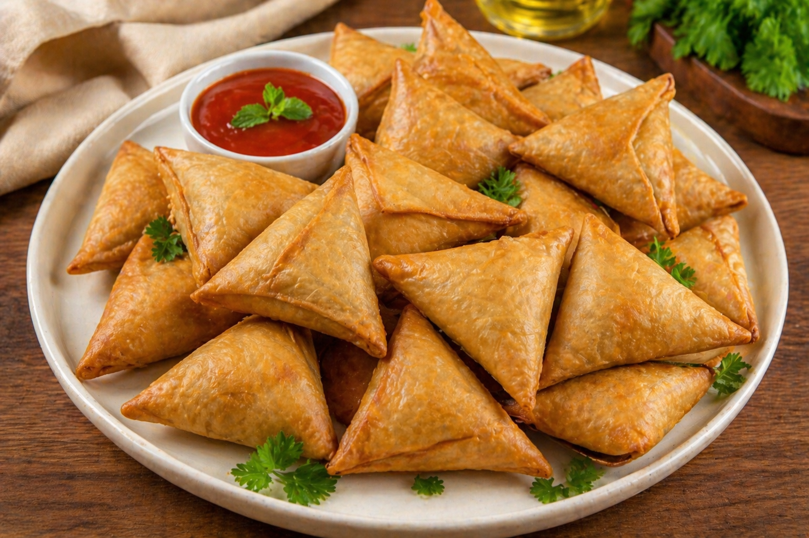
مقبلات منزلية شهية تضيف تنوعًا جميلًا للطلب اليومي أو العائلي.
الهدف هنا ليس التعقيد، بل أن يرى العميل الأصناف بسرعة ويختار ما يناسبه ثم ينتقل فورًا إلى الطلب.


هذا القسم مناسب للسينابون والبسبوسة وخلية النحل وكل الأصناف المنزلية التي تجذب العميل بصريًا.
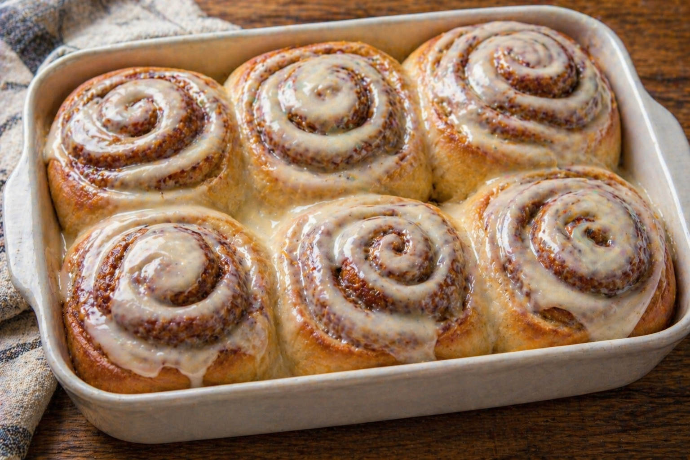
تقديم جذاب وشهي يفتح الشهية ويزيد احتمالية إضافة الحلى إلى الطلب.
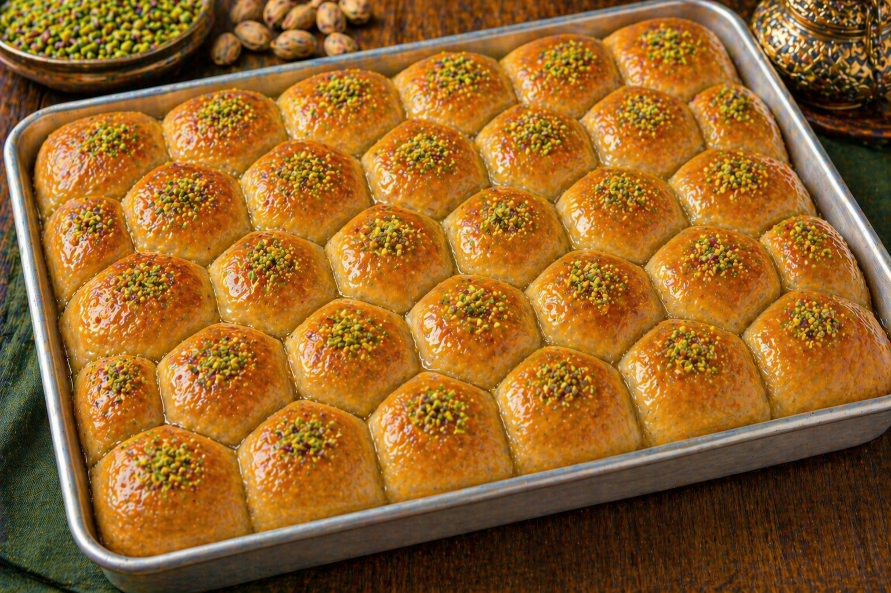
قسم جاهز للبسبوسة أو خلية النحل أو أي صنف تحلية يومي تودين إبرازَه.
في هذا النشاط، العميل لا يقرأ كثيرًا؛ هو ينظر أولًا إلى الصور والأطباق والتغليف، ثم يقرر الطلب. لذلك جرى تحويل هذا الجزء إلى معرض بصري حقيقي بدل الأشكال التجريدية.
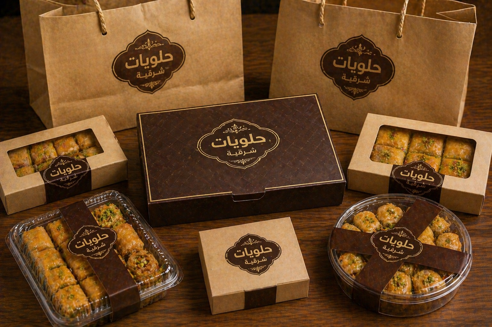
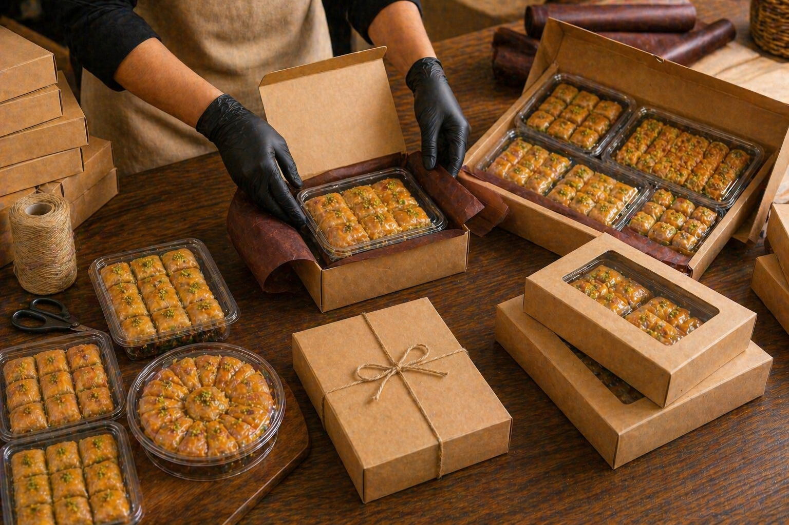
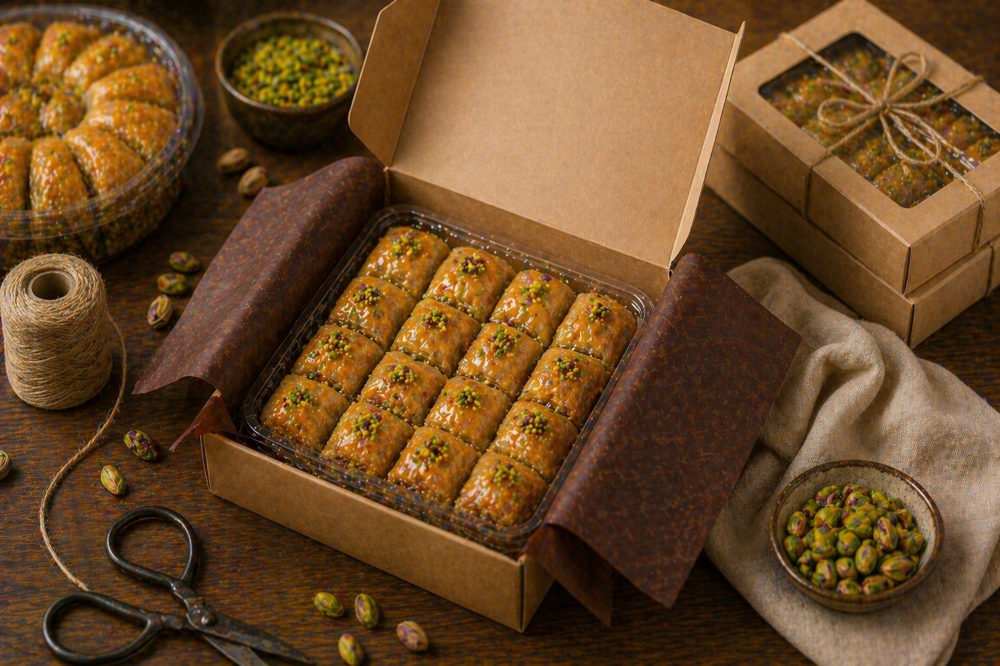
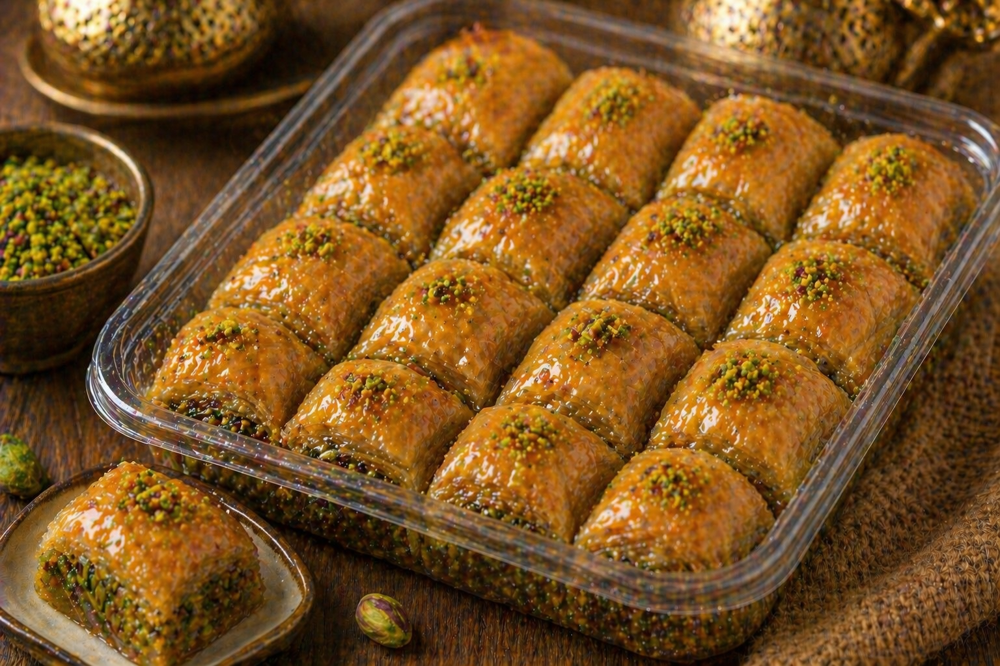
كثير من العملاء يريدون أن يعرفوا بسرعة: هل التوصيل يصل لحيهم؟ ومتى يبدأ الطلب؟ وكم الوقت؟ لذلك جرى إبراز هذه المعلومات بشكل واضح.
صفحة الأسر المنتجة الناجحة لا تحتاج تعقيدًا، بل تحتاج وضوحًا واختصارًا في الرحلة من العرض إلى واتساب.
العميل يرى الأطباق وطلبات اليوم بسرعة ومن دون تشتيت.
يضغط على الزر ويصل مباشرة برسالة جاهزة أو شبه جاهزة.
يتم تحديد الكمية والوقت والمنطقة بسهولة.
تنتهي الرحلة بخطوة واضحة وسريعة ومريحة للعميل.
يمكن لاحقًا استبدال هذه النصوص بتقييمات حقيقية أو صور محادثات بعد موافقة أصحابها.
الطلب وصل مرتب وطعمه ممتاز، وأكثر شيء أعجبني وضوح الطلب وسهولته.
عميلة سابقةشكل الأكل في الموقع شجعني أجرب، وبالفعل كان الترتيب والطعم ممتازين.
عميل جديدالقائمة واضحة جدًا، والطلب عبر الواتساب كان سريعًا وسهلًا.
طلب عائليهذا النموذج مبني ليخدم الأسر المنتجة بشكل مباشر: أطباق، منيو، توصيل، وطلب سريع من الجوال.